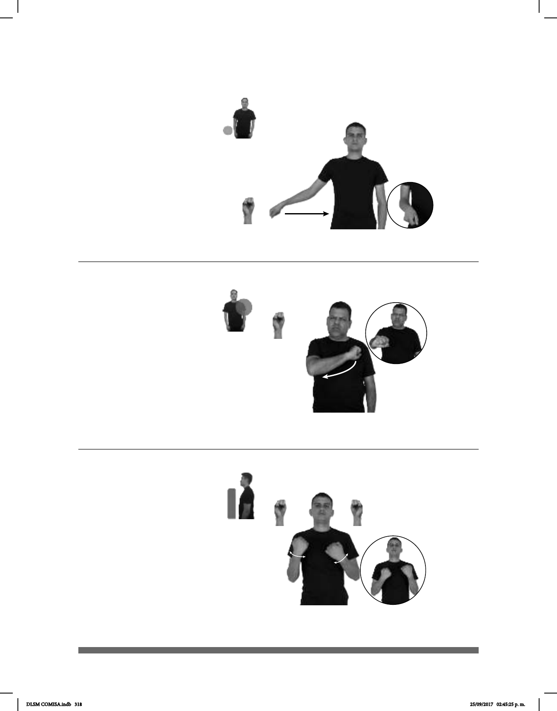

318
Seña: SM
S.1
Palma hacia afuera.
A la altura de la cintura.
Recto de atrás hacia
adelante.
Simula la acción de
jalar una maleta de ruedas.
sust. f. Objeto, generalmente
rectangular, de piel, de lona o de plástico,
con un asa en la parte superior y ruedas
en parte inferior que se usa para guardar
y transportar la ropa y los utensilios de
viaje.
Seña: SM
S.1
Palma hacia abajo.
A la altura del pecho.
Recto hacia el frente.
Ceño fruncido.
1.adj. Que destruye, es
injusto o se opone a la vida; que tiene la
intención de actuar de esa manera. 2. adj.
Que es contrario a lo establecido en un
momento dado, que se opone a lo que
se considera justo o deseable. 3.adj. Que
hace daño, que resulta inconveniente,
desagradable, desafortunado, incompleto,
etc. para algo o para alguien.
Seña: SB
MD y MB S.1
MD oblicua hacia la
izquierda, MB oblicua hacia la derecha.
A la altura del pecho.
Los brazos se mueven
formando un arco hacia la izquierda y
después hacia la derecha simultanea y
repetidamente.
Simula la acción de
conducir un vehículo.
v. tr. Dirigir un vehículo.
(S-73)
(S-74)
(S-75)
_____neg_
MALETA-DE-RUEDAS MEJOR CUERPO NO DOLER
Usa maleta de ruedas mejor, no lastima el cuerpo.
______neg
pro-TÚ MALO NO DEBER
No debes ser malo.
pro-TÚ SABER MANEJAR COCHE LEJOS
Sabes manejar lejos.
DLSM COMISA.indb 318 25/09/2017 02:45:25 p. m.